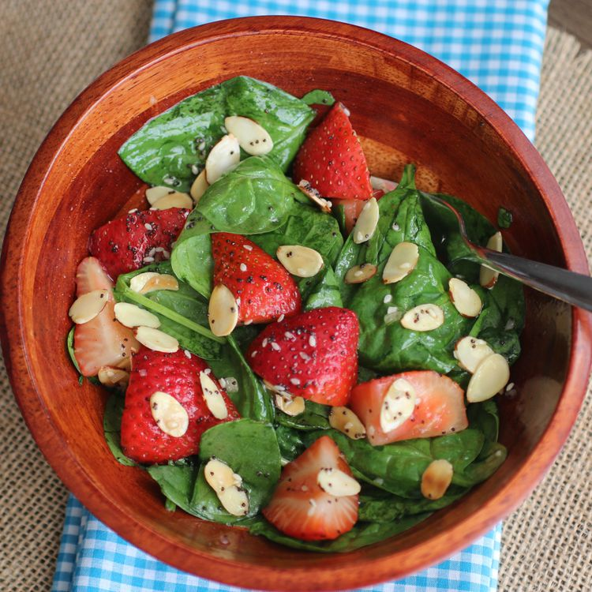

Strawberry Spinach Salad

Description
This strawberry spinach salad is a great way to get kids to eat spinach. Not only is it easy and fast to prepare, it's vibrant colours will make a great addition to your dinner table! Bring it to a potluck dinner and everyone will be asking for the recipe.
All you'll need to make this recipe is sugar, olive oil, white vinegar, sesame seeds, minced onion, paprika and Worcestershire sauce. You can always substitute white vinegar with balsamic vinegar to make it extra tasty. If you're opting for a less sweet version of this recipe, cut the sugar down to 1/4 cup. Scroll down below for the full ingredient list and step-by-step instructions of this recipe!
Ingredients
Dressing:
- 1/2 cup white sugar
- 1/2 cup olive oil
- 1/4 cup distilled white vinegar
- 2 tablespoons sesame seeds
- 1 tablespoon poppy seeds
- 1 tablespoon minced onion
- 1 teaspoon paprika
- 1 teaspoon Worcestershire sauce
Salad:
- 1 quart strawberries - cleaned, hulled and sliced
- 10 ounces fresh spinach - rinsed, dried and torn into bite-size pieces
- 1/4 cup almonds, blanched and slivered
Steps
- Make dressing: Whisk together sugar, olive oil, vinegar, sesame seeds, poppy seeds, onion, paprika, and Worcestershire sauce in a medium bowl. Cover and chill for 1 hour.
- Make salad: Combine strawberries, spinach, and almonds in a large bowl.
- Pour dressing over salad; toss to coat. Refrigerate for 10 to 15 minutes before serving.
Click here to view the original recipe webpage